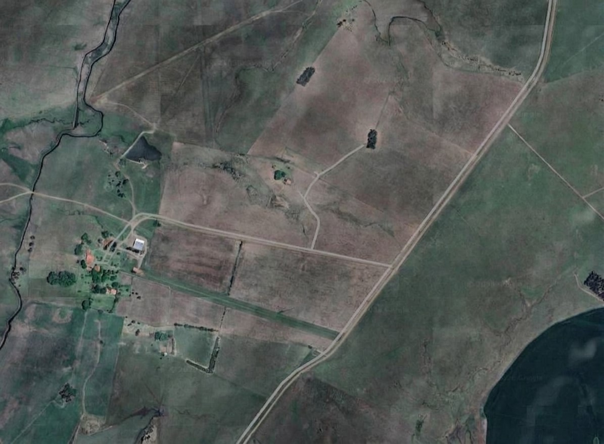

Colheita Anual
Administracao do Sistema
Controle de funcionarios, usuarios ativos, mapa da fazenda e indicadores da producao.
Equipe
Cadastro de Funcionarios
Funcionarios Cadastrados
| Matricula | Nome | Cargo | Perfil | Status |
|---|
Usuarios Ativos
| Matricula | Nome | Perfil | Ultimo acesso | Ultima atividade | Status |
|---|
Mapa da Fazenda
Visualizacao dos talhoes configurados pelo Engenheiro.

Normal
Atencao
Critico
Selecionado
Assistente-FrutLog
Olá! Como posso ajudar?
Olá, quero tirar uma dúvida
Clima Mensal